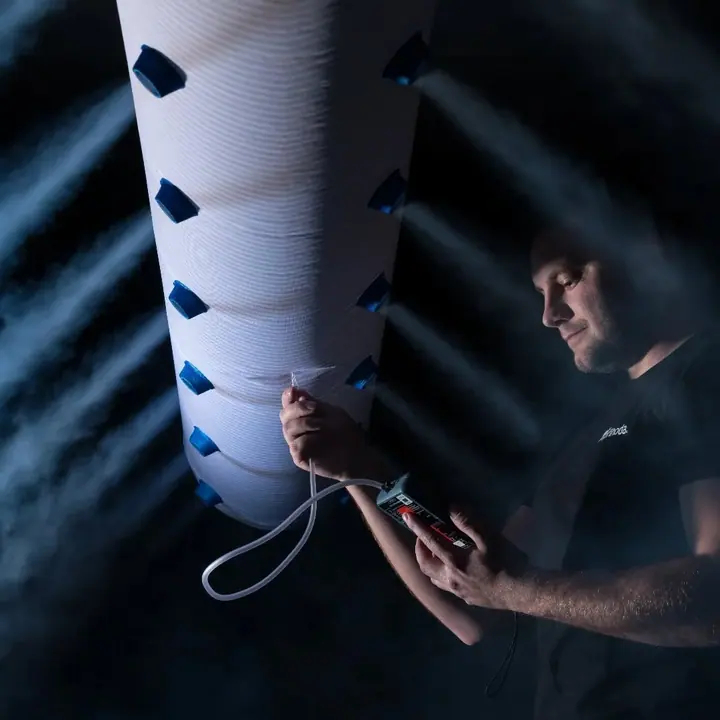
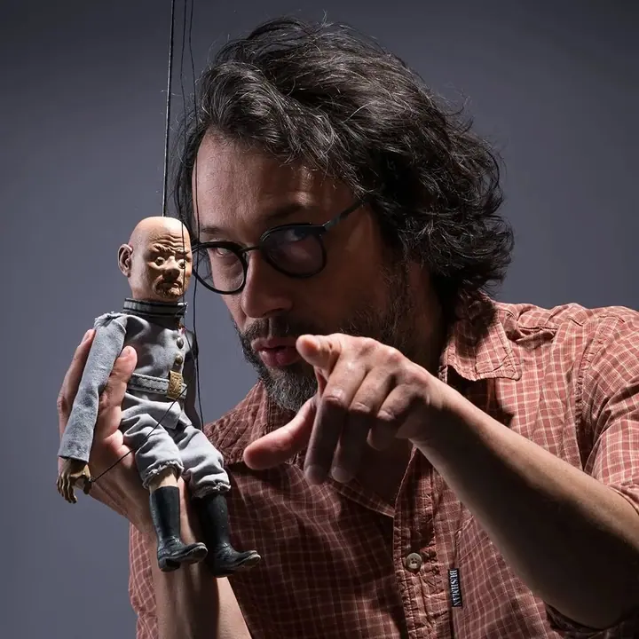
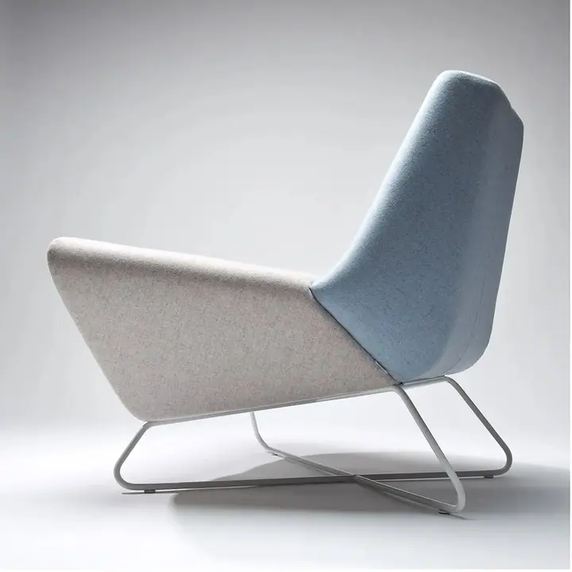
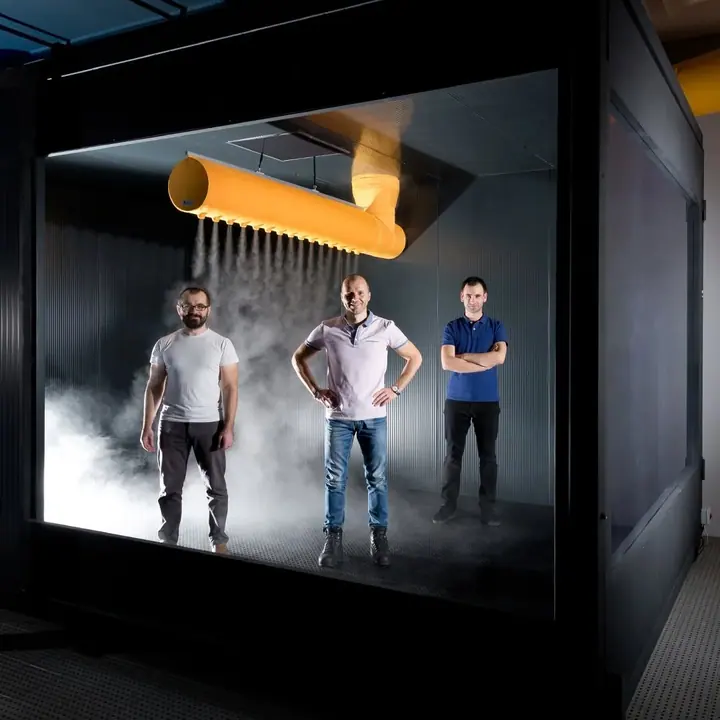
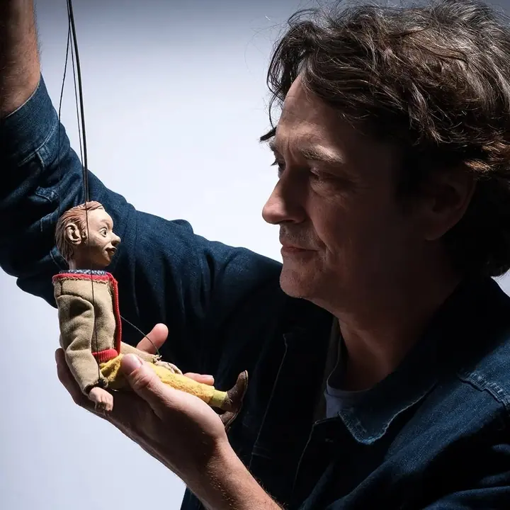
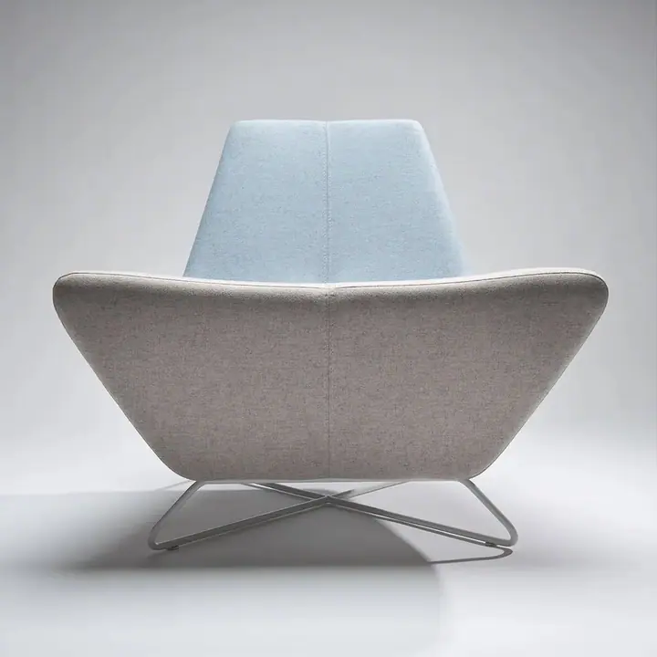
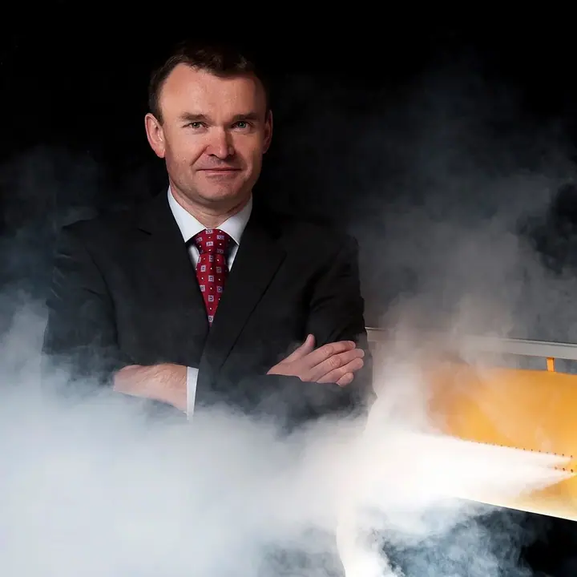
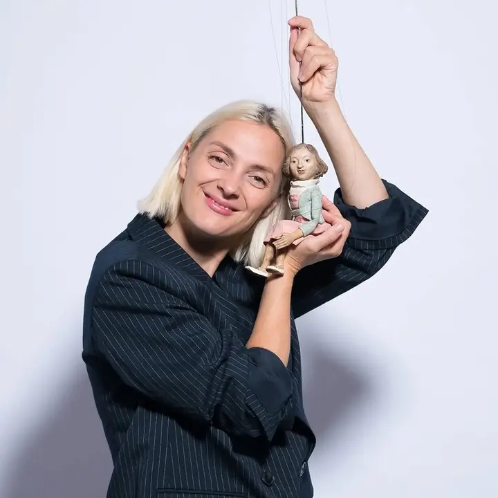
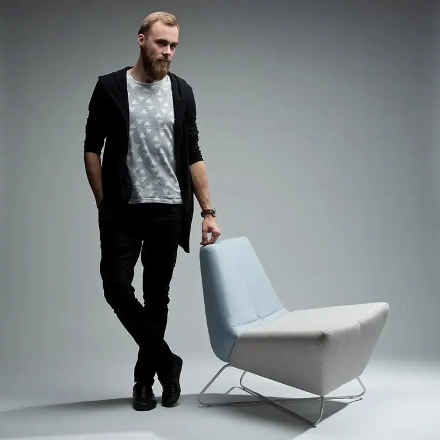
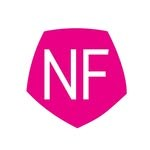

01 / 04
Průmyslová a firemní fotografie
Fotím firmy, jejich provozy, technologie a lidi. Pořizuji týmové fotky i portréty vedení, které můžete použít na webu, v katalogu i ve výroční zprávě.
Zeptat se na termín→








Fotografie pro firmy, které umí ukázat
Zeptat se na termín →(01) Ahoj
Jmenuji se Michal Novotný a ve svém ateliéru v Jihlavě fotím výrobky , firmy a jejich lidi i výtvarné portréty . Fotografii se profesionálně věnuji 30 let a umím k ní přidat i grafický design, web a branding.
54příspěvků s fotkami a příběhy
30let za objektivem
(02) Co fotím
01 / 04
Fotím firmy, jejich provozy, technologie a lidi. Pořizuji týmové fotky i portréty vedení, které můžete použít na webu, v katalogu i ve výroční zprávě.
Zeptat se na termín→02 / 04
Výrobky fotím v ateliéru s pečlivě postaveným světlem, aby vynikl tvar, materiál i detail. Hodí se pro katalogy, e-shopy i reklamu.
Zeptat se na termín→03 / 04
Kromě komerční práce se v ateliéru věnuji i výtvarné fotografii. Portréty stavím na světle, výrazu a příběhu, který si člověk přinese s sebou.
Zeptat se na termín→Dále nabízím
Fotky umím zpracovat i dál: navrhnu vizuální identitu, tiskoviny nebo web. Fotografie a design tak máte z jedné ruky.
↗(04) Postup
Od první zprávy po hotovou galerii.
Krok 1 z 4
Napíšete mi nebo zavoláte, co potřebujete nafotit a k čemu budou fotky sloužit. Společně ujasníme rozsah, styl a termín.
Krok 2 z 4
Podle zadání naplánuji světlo, místo a postup. Výrobky fotím v ateliéru v Jihlavě, provozy a týmy přímo u vás ve firmě.
Krok 3 z 4
Na místě pracuji klidně a v tempu, které vám nenaruší provoz. Lidem pomůžu s postojem i výrazem, aby se před objektivem cítili dobře.
Krok 4 z 4
Vybrané snímky pečlivě upravím a předám v rozlišení pro web i tisk. Pokud chcete, navážu grafickým zpracováním nebo webem.
Světlo, které z výrobku udělá příběh
(05) Za objektivem
Jsem profesionální fotograf z Jihlavy a fotím už 30 let. Na Znojemské ulici mám ateliér výtvarné a průmyslové fotografie, kde vznikají produktové snímky, firemní portréty i volná tvorba.
Nejčastěji pracuji pro firmy. Fotím jejich výrobky, technologie, provozy a lidi, kteří za tím vším stojí. Záleží mi na světle a na tom, aby fotka byla čistá, přesná a firmě opravdu k užitku.
Kromě fotografie se věnuji grafickému designu, webdesignu a brandingu. Fotky proto rovnou vidím v souvislostech, ať skončí na webu, v katalogu nebo na billboardu.

Michal
Michal Novotný · Produktový a firemní fotograf
Obojí. Produkty fotím hlavně v ateliéru v Jihlavě, provozy, technologie a týmové fotky pořizuji přímo u vás ve firmě.
Od nábytku přes průmyslové a technické výrobky až po menší předměty. Ozvěte se s konkrétním zadáním a domluvíme nejvhodnější postup.
Ano, lidi lze nafotit postupně na jednotném pozadí a ve stejném světle a pak je spojit do jedné společné fotografie.
Ano, kromě fotografie se věnuji grafickému designu, webdesignu a brandingu. Fotky i jejich další využití tak můžete mít z jedné ruky.
(07) Kontakt
Napište pár vět o tom, co si představujete, a termín, který se vám hodí.
michal@novotnyfotograf.cz